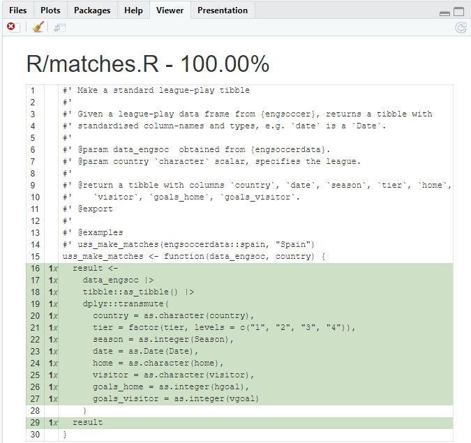
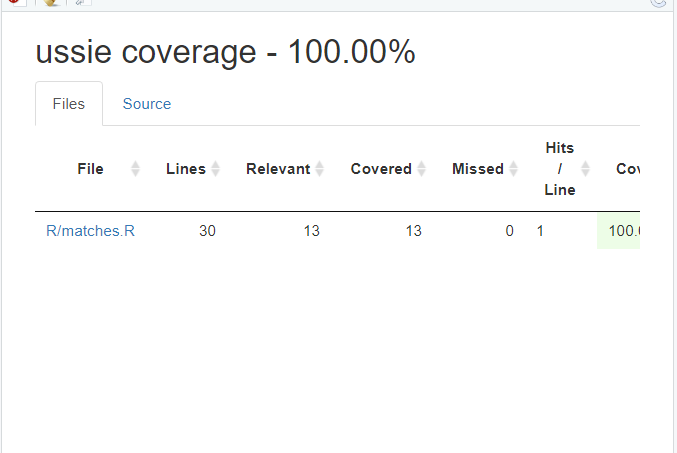

📦
Building tidy tools
Day 1 Session 3: Unit tests
Emma Rand and Ian Lyttle
☑️ Unit Testing
Learning Objectives
At the end of this section you will be able to:
- understand the rationale for automating tests
- describe the organisation of the testing infrastructure and file contents for the
testthat(Wickham 2011) workflow - set up a package to use
testthat - create a test and use some common ‘expectations’
- run all the tests in a file and in a package
- determine the test coverage in a package
Why test?
Why test?
To make sure our code works
To make sure our code keeps working after we add features
For example
When we run:
The objects italy and spain should be:
- tibbles
- have columns: “country”, “tier”, “season”, “date”, “home”, “visitor”, “goals_home” and “goals_visitor”
So we might…
Check interactively
Try these:
Interactive testing …
…is informal testing:
- wrote
uss_make_matches() - loaded package with
devtools::load_all() - ran
uss_make_matches()interactively - edited
uss_make_matches()if needed - loaded package with
devtools::load_all() - ran
uss_make_matches()interactively
Informal test workflow
%%{init: {'theme': 'base', 'themeVariables': { 'primaryColor': '#f3f3f3', 'lineColor':'#EE9AD9'}}}%%
flowchart LR
id1("Reload code: \n load_all()") -->
id2("Explore in \n console") -->
id3("Modify \n code")
id3 --> id1
style id1 id2 id3 stroke:#3F3F3F,stroke-width:2px
Why automate testing?
Why automate testing?
Problem: you forget all the interactive testing you’ve done
Solution: have a system to store and re-run the tests!
Why automate testing?
Fewer bugs: you are explicit about behaviour of functions.
Encourages good code design. If it is hard to write unit tests your function may need refactoring
Opportunity for test-driven development
Robustness
Read more about testing in the recently updated chapter in R Packages (Wickham and Bryan 2020)
Automated test workflow
%%{init: {'theme': 'base', 'themeVariables': { 'primaryColor': '#f3f3f3', 'lineColor':'#EE9AD9'}}}%%
flowchart LR
id1("Reload code: \n load_all()") -->
id2("Run automated tests: \n test() or test_file()") -->
id3("Modify \n code")
id3 --> id1
style id1 id2 id3 stroke:#3F3F3F,stroke-width:2px
Infrastructure and organisation
Organisation: files
- tests files are in:
tests/testthat/ - test files are named
test-xxxx.R -
tests/testthat.R: runs the tests whendevtools::check()is called
Organisation within files
- any test file
test-xxxx.Rcontains several tests. Might be:- all the tests for a simple function
- all the tests for one part of a complex function
- all the tests for the same functionality in multiple functions
Organisation within files
- a test groups several ‘expectations’. An expectation:
- has the form:
expect_zzzz(actual_result, expectation) - if
actual_result==expectationno error - if
actual_result!=expectationError
- has the form:
Workflow
Workflow
- Set up your package to use
testthat:usethis::use_testthat(3)ONCE
- Make a test:
usethis::use_test()
- Run a set of tests:
testthat::test_file()
- Run the entire testing suite:
devtools::test()anddevtools::check()
Set up
Set up
To set up your package to use testthat: usethis::use_testthat(3) which:
makes
tests/testthat/: this is where the test files live-
edits
DESCRIPTION:- Adds
Suggests: testthat (>= 3.0.0) - Adds
Config/testthat/edition: 3
- Adds
makes
tests/testthat.R: this runs the test when you dodevtools:check()DO NOT EDIT
Set up
🎬 Set up your package to use testthat:
usethis::use_testthat(3)3 means testthat edition 3 (testthat 3e)
As well as installing that version of the package, you have to explicitly opt in the edition behaviours.
Expectations
Expectations
Before we try to make a test, let’s look at some of the expect_zzzz() functions we have available to us.
Form: expect_zzzz(actual_result, expectation)
- the
expectationis what you expect - the
actual_resultis what you are comparing to the expectation - some
expect_zzzz()have additional arguments
For example
# to try out testhtat interactively we load
# and request edition 3
# but, you do *not* do that in a package.
library(testthat)
local_edition(3)
# when the actual result is 42
result <- 42
# and we expect the result to be 42: no error
expect_identical(result, 42)and
# when the actual result is "a"
result <- "a"
# and we expect the result to be "a": no error
expect_identical(result, "a")But
# when the actual result is 45
result <- 45
# and we expect the result to be 42: Error
expect_identical(result, 42)Error: `result` (`actual`) not identical to 42 (`expected`).
`actual`: 45
`expected`: 42and
# when the actual result is "bob"
result <- "bob"
# and we expect the result to be "a": Error
expect_identical(result, "A")Error: `result` (`actual`) not identical to "A" (`expected`).
`actual`: "bob"
`expected`: "A" Some common expectations
Some types of expect_zzzz()
- Testing for identity:
expect_identical() - Testing for equality with wiggle room:
expect_equal() - Testing something is TRUE:
expect_true() - Testing whether objects have names:
expect_named() - Testing errors:
expect_error()
Equality with wiggle room
# when the actual result is 42
result <- 42
# and we expect the result to be 42: no error
expect_equal(result, 42)# and when the actual result is 42.0000001
result <- 42.0000001
# and we expect the result to be 42: we still do
# not have an error because expect_equal()
# has some tolerance
expect_equal(result, 42)Equality with wiggle room
# but when the actual result is 42.1
result <- 42.1
# and we expect the result to be 42: error because
# 0.1 is bigger than the default tolerance
expect_equal(result, 42)Error: `result` (`actual`) not equal to 42 (`expected`).
`actual`: 42.1
`expected`: 42.0Equality with wiggle room
We can set the wiggle room:
# but when the actual result is 42.1
result <- 42.1
# and we expect the result to be 42: no error if we
# provide a tolerance
expect_equal(result, 42, tolerance = 0.1)Testing something is TRUE
expect_true("a" == "a")Testing whether objects have names
# vector of named values
x <- c(a = 1, b = 2, c = 3)
# test whether x has names: no error
expect_named(x)
# test if the names are "a", "b", "c": no error
expect_named(x, c("a", "b", "c"))Making a test
Make a test
You can create and open (or just open) a test file for blah.R with use_test("blah").
🎬 Create a test file for matches.R . . .
usethis::use_test("matches")Test file structure
For example:
Make a test
We will add three expectations:
- test that the output of
uss_make_matches()is a tibble withexpect_true()
- test that the output of
uss_make_matches()has columns with the right names withexpect_named()
- test that the country column of the
uss_make_matches()output is correct withexpect_identical()
We will do them one at a time so you can practice the workflow.
Edit test-matches.R
🎬 Add a test to check the output of uss_make_matches() is a tibble with expect_true():
test_that("uss_make_matches works", {
# use the function
italy <- uss_make_matches(engsoccerdata::italy, "Italy")
expect_true(tibble::is_tibble(italy))
})We use uss_make_matches() and examine the output with an expectation.
Running a test
Running a test
🎬 Run the test with testthat::test_file()
testthat::test_file("tests/testthat/test-matches.R")You can also use the “Runs Tests” button
devtools::test()
🎬 Run all the tests with devtools::test()
devtools::test()Add an expectation
Now you will test the output of uss_make_matches() to make sure it has columns with the right names expect_named()
we expect the names to be:
“country”, “tier”, “season”, “date”, “home”, “visitor”, “goals_home”, “goals_visitor”
🎬 Use expect_named() in test-matches.R to check the column names of italy
Answer
test_that("uss_make_matches works", {
# use the function
italy <- uss_make_matches(engsoccerdata::italy, "Italy")
expect_true(tibble::is_tibble(italy))
expect_named(
italy,
c("country", "tier", "season", "date", "home", "visitor",
"goals_home", "goals_visitor")
)
})Run the edited test
🎬 Run the edited test file
testthat::test_file("tests/testthat/test-matches.R")Or the “Runs Tests” button
devtools::test()🥳
Add the last expectation
Now check that the country column of the uss_make_matches() output is correct with expect_identical()
🎬 Use expect_identical() in test-matches.R to compare the values in italy$country to “italy”
🎬 Run the tests
My answer
test_that("uss_make_matches works", {
# use the function
italy <- uss_make_matches(engsoccerdata::italy, "Italy")
expect_true(tibble::is_tibble(italy))
expect_named(
italy,
c("country", "tier", "season", "date", "home", "visitor",
"goals_home", "goals_visitor")
)
expect_identical(unique(italy$country), "Italy")
})Extra: find a bug, add a test
Running a practice session for this course, we found a bug:
test_that("uss_make_matches works", {
# use the function
italy <- uss_make_matches(engsoccerdata::italy, "Italy")
expect_true(tibble::is_tibble(italy))
expect_named(
italy,
c("country", "tier", "season", "date", "home", "visitor",
"goals_home", "goals_visitor")
)
expect_identical(unique(italy$country), "Italy")
# when you find a bug, add a test: 👋 from Ian
expect_s3_class(italy$tier, "factor")
})Test coverage
Test coverage
Test coverage is the percentage of package code run when the test suite is run.
- provided by
covr(Hester 2020) package - higher is better
- 100% is notional goal but rarely achieved
Test coverage
There are two functions you might use interactively:
coverage on the active file:
devtools::test_coverage_active_file()coverage on the whole package:
devtools::test_coverage()
Coverage in active file
🎬 Make sure matches.R is active in the editor and do:
devtools::test_coverage_active_file()
Coverage in package
🎬 Check the coverage over the whole package:
devtools::test_coverage()
☑️ Woo hoo ☑️
You wrote a unit test!
Commit and push
Now would be a good time to commit your changes and push them to GitHub


Summary
- Automated testing means you can systematically check your code still works when adding features
-
testthat“tries to make testing as fun as possible” - Organisation: test files
- live in:
tests/testthat/ - are named:
test-xxxx.R - contain:
test_that("something works", { *expectations* }) -
tests/testthat.R: runs the tests and should not (normally) be edited
- live in:
Summary
- Expectations have the form
expect_zzzz(actual_result, expectation) - Workflow
-
usethis::use_testthat(3)sets up your package to usetestthat -
usethis::use_test(xxxx)createstest-xxxx.R -
testthat::test_file()runs the tests in a test file -
devtools::test()runs the tests in all the test files
-
- Test coverage can be determined
- on the active file with
devtools::test_coverage_active_file() - on the whole package:
devtools::test_coverage()
- on the active file with